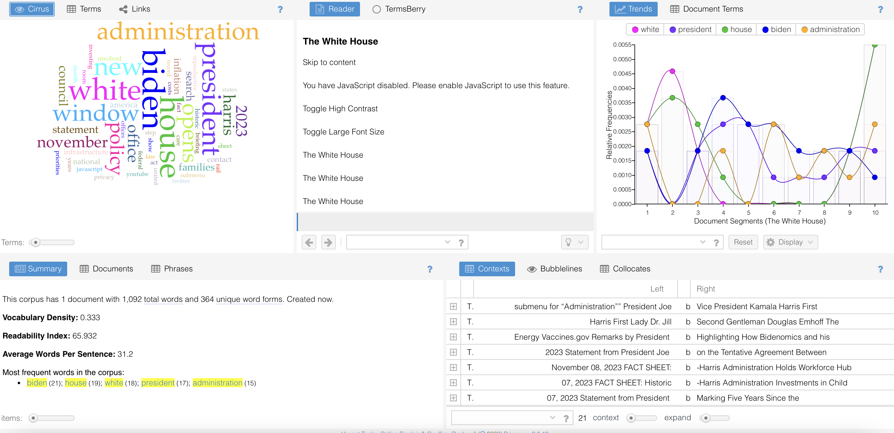

Using Voyant Tools
Voyant tools showed how the White House homepage most used words were white, house, Biden, president, and administration. The graph provided shows that white is rarely seen without house and president is rarely used without Biden.
This tool can very simply show us the focus and priorities of the website. These are clearly to convey and share President Biden’s recent work, speeches, and press releases in the White House as well as share policy updates, events, and other federal information people may need.

Samples of Text
Below are three samples of text that I have created to convey the style and tone that I wish to represent in the site. While these exact samples may not be used, they will hopefully clarify the viewpoint of the website.
The samples include an opening statement that would hypothetically be displayed on the homepage of the site to welcome teachers to the website. The second is a statement that aims to contextualise the site and the issue. The third text sample is a key argument, which aims to further drive home why this is an issue worth addressings. All three of these statements would likely be featured early on in the site to ensure of users' understanding of the aims and goals of the site.
Opening statement:
- Teachers! Are you worried about your students’ online habits? Do they repeat things they’ve read without verifying their reliability? Are you concerned that social media is in control of their opinions? If so, or even if you’re just curious, this site may be able to help. Take a look around and access some resources that could help you and your students!
Contextualising statement:
- Media literacy is a pillar stone of consuming and understanding media, both traditional and online. Even as simple as being aware of the political stances of newspapers and news broadcasts can help the public align themselves with their beliefs and understand world news. On social media sites, users are constantly fed stories that might be untruthful, biased, or propaganda and it is up to them to distinguish what they choose to believe and what they choose to disregard. Our goal is to equip teachers with the context and tools to carry out lessons and conversations that will further their students’ understanding of media literacy and develop their critical skills.
Key argument:
- Children and young people are highly impressionable and easily influenced by their peers and other influences around them. The rise in technology and social media usage has increased the amount of content that they consume with parents and teachers struggling to monitor online habits and safety. Teachers across the nation, and internationally, have witnessed the influence of social media personalities, such as Andrew Tate, on their students and the results have been deeply troubling and upsetting for many of them. Many teachers’ have observed concerning behaviour from young boys in relation to their following of Andrew Tate and his misogynistic views. Despite being awaiting trial on rape and human trafficking charges, Tate still has a myriad of young fans that consume his videos and relay his comments to their peers. Tate’s videos have warped young boys’ minds and have led to what can only be called a radicalisation of young boys into misogynists (BBC News, 2022). This is only one example of the influence that social media can have on young people and how it can seriously impact their everyday lives.
Suitability of Text Samples for a Multimedia Site
I think these samples of text are largely suitable for a multimedia site and I will explain how using the professional writing characteristics used earlier:
- Accuracy – Accuracy is key when introducing the topic and outlining key arguments and the context of the site. I have tried my best to be completely accurate both in my writing and in the sources and information presented.
- Active voice – I have tried to use an active voice as much as possible.
- Limit biases – The goal is to develop a neutral site that teachers can access for help and for resources when discussing media literacy with their students. Because of this the site has a bias that media literacy is good but apart from that there will be no age, race, or implicit biases.
- Clarity – I have steered clear of technical jargon and have opted for more simple words with a formal tone to introduce the concepts. The site will be largely casual but in regard to the seriousness of the issue and more formal tone seemed apt.
- Conciseness – The paragraphs are fairly short to ensure that the audience will read it all and not get too bored or distracted.
- Conversational and smoothly flowing prose – conversational language will be incorporated more in the actual site, similar to the opening statement. The key argument and contextualisation are more formal just for clarity within the proposal.
- Correctness – Grammar and spellings should all be correct.
- Parallelism – Parallel phrasing can be incorporated but didn’t seem necessary at this point.
- Positive voice – The samples of text are not 100% positive so have not been written in an entirely positive voice. I don’t want to downplay the seriousness of the discussion about Andrew Tate and therefore wouldn’t want to put a positive voice spin on that section.
- Strong nouns and verbs – I don’t believe that the samples of text overuse the verb to be.
- Sentence variability – Sentences are varied.
- Simple words – Simple words have been used.
- Shorter paragraphs – Short paragraphs have been used.
- Tone and voice – Formal voice has been applied where required and a more casual tone has been applied for the opening statement.